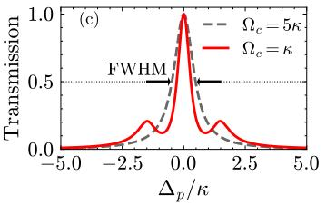
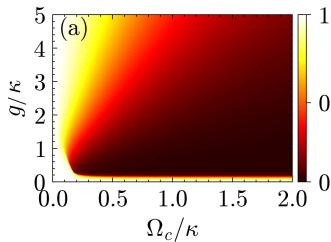

物理图像
微波谐振腔中储存的电磁能量并非永久保留：腔光子会通过两条主要通道离开模式。一是外部损耗 ，经耦合电容（透射腔为 ，反射腔为单个端口）漏入馈线与测量线路；二是内部损耗 ，来自超导体准粒子激发、电极–衬底与金属–空气界面上的二能级系统（two-level system, TLS）介电损耗、微波辐射到自由空间的长直流电极寄生通道等。两者之和
即总腔耗散率，也就是Jaynes–Cummings 模型主方程中驱动 的耗散项。在频谱上， 给出无加载腔的洛伦兹响应（见微波谐振腔词条）的半高宽（full width at half maximum，FWHM），通常直接简称为”腔线宽”。在光机械与电机械语境里， 与机械频率 之比还决定边带分辨与量子反作用强度——进入反馈冷却的反作用声子预算项 。
工程语境中，腔线宽常被换算成无量纲的品质因子（quality factor）
描述腔中能量从初值衰减到 期间载波完成的平均振荡次数。相应地 ，即腔频与品质因子的商。在许多实验拟合里， 比 更便于在不同频率的腔之间作横向比较。
理论模型
三种品质因子的定义
把外部与内部损耗分开，得到：
其中 称为有载品质因子（loaded quality factor）或总品质因子，、 分别由耦合端口与内部损耗主导。实验中通过测量 或 拟合得到的 FWHM 是 （而非 ），相应地 。
定义耦合系数 ：
- ：欠耦合（under-coupled），腔与外界接触弱，，适合用作窄带滤波器与高相干性量子存储；
- ：过耦合（over-coupled），，，腔中光子很快漏出，适合用作快速读出；
- ：临界耦合（critically coupled），透射功率最大、阻抗完全匹配。
集总模型与分布式等效
对集总 RLC 回路，无载品质因子 ，加入外部负载 后 ，合并得到 。对分布式共面波导腔（coplanar waveguide，CPW），在谐振频率附近可等效为集总 RLC 模型：，，，其中 与衰减系数相关。当耦合电容 较小（）时，有载品质因数近似 ，耦合电容越大、 越低。
与 参数的对应
把无加载谐振腔看作二端口网络，由输入–输出理论可写透射系数
半高宽即 ；相位响应 在 处跨越 。反射腔相应地
谱线在 处出现反射谷，谷的宽度仍由 决定。
当量子点等”比特”耦合到腔时，比特磁化率 进入 参数分母的修正项：
按实部、虚部分解得到比特对腔频与腔线宽的同时调制
色散区（）实部主导，腔频按 偏移；近共振时虚部主导，腔线宽增大——这是从谱线判断系统是否”被比特加载”的最直接判据。
物理意义的另一种解读：能量与寿命
腔线宽的时域对应是光子数寿命 ：
即 是腔内平均光子数衰减到 所需时间。“高 长寿命”与”窄线宽”是同一物理现象的频域、时域表达。专门指出，“在实验中，我们一般习惯使用线宽（损耗速率）而非品质因子来描述谐振腔的性能”，因为拟合 参数时直接读出的就是 。
可调线宽：EIT 与腔线宽变窄

腔-EIT 实验设置： 个原子与腔模耦合，探针场（probe）与控制场（control）共同构成 EIT 介质——控制场强度调节腔的透射线宽。图源：Santos et al. (2024)，Fig. 1(a)。

EIT 腔线宽变窄的参数空间：FWHM（以 为单位）随 与 的变化——控制场越弱、耦合越强，线宽越窄； 时回到空腔极限（FWHM=1）。图源：Santos et al. (2024)，Fig. 2。
EIT 线宽变窄与高阻抗谐振腔的”提高 “是两条互补的线宽/耦合工程路线：前者靠介质相干性动态调节，后者靠器件几何静态设计；两者共同的物理基础都是Jaynes–Cummings 模型的非线性（暗态极化子与真空 Rabi 劈裂是同一哈密顿量的两个侧面）。
损耗通道的物理来源
外部损耗
由耦合电容与阻抗共同决定。以透射腔为例，端口 的外耦合率
其中 为馈线特征阻抗， 为端口耦合电容。这一标度有两层物理含义：(1) 提高 在同样 下会显著增大 ，因此高阻抗腔虽然提升真空电场，但也更难”封闭”光子，需要更精细地设计耦合端口；(2) 端口电容平方的依赖使 对工艺容差敏感——光刻偏差 10% 就会带来约 20% 的线宽变化。
内部损耗
是本征损耗，由腔本身的电磁能量耗散通道决定：
- 超导准粒子损耗：温度升高或外加磁场抑制超导能隙时，准粒子浓度上升、库珀对隧穿受阻，电阻损耗出现。通过变温实验指出 NbTiN 等高动态电感材料由于 高、临界场大，准粒子损耗对磁场更不敏感；
- 电极–衬底界面 TLS 损耗：金属–介质界面的非晶态缺陷在低温下饱和为 – 的介电损耗，是限制 的主要因素。NbTiN、TiN 等薄膜的工艺优化（表面氢氟酸清洗、原位保护层）能把 TLS 损耗抑制约一个量级；
- 金属–空气界面 TLS：与上条类似但处于上表面，与光刻胶残留、氧化层厚度有关；
- 辐射损耗：长直流电极在微波频段如同天线，把腔内能量辐射进自由空间或邻近电路。总结为”材料损耗、表面缺陷、界面损耗、辐射损耗以及超导损耗”五类；
- 磁通抑制损耗：SQUID 阵列腔在偏离磁通极大点时，电感非线性显著、循环电流增加，正常导体损耗进入工作区，因此其 通常比高动态电感腔高一个量级。上述通道在 中被概括为”材料损耗、表面缺陷、界面损耗、辐射损耗以及超导损耗”五类。
Fano 干涉与拟合模型
高阻抗腔的中心导体常为亚微米线宽，与寄生微波通道（pad、bonding wire）形成多通道耦合，导致 或 出现明显不对称线型——Fano 共振。直接套用纯洛伦兹线型会引入系统误差， 与 都被低估。报告：“通过使用带有 Fano 效应的 Lorentzian 曲线拟合后，我们确定谐振腔的中心频率与线宽”。也明确指出对 SQUID 阵列腔须用 Fano-Lorentz 模型，提取的 才能用于后续物理量分析。
参数与量级
下表汇总本站论文中报告的腔参数。同一工作中不同腔型用于不同实验，因此数据点之间的差异主要来自腔型选择与工艺成熟度，而非单一物理量。
| 腔型 | 来源 | ||||||
|---|---|---|---|---|---|---|---|
| 50 Ω CPW 透射腔（锗硅纳米线 DQD） | 50 Ω | 5.92 GHz | — | — | — | — | |
| 标准 CPW 反射腔耦合单量子点 | 50 Ω | 5.992 GHz | — | 14.53 MHz | — | ，p. 23 | |
| 双端口透射腔（双 DQD） | 50 Ω | 6.53 GHz | — | 30.0 MHz | 数十 MHz | — | ，pp. 55、60 |
| 全封闭 3D 铝腔（20 mK） | — | 9.45 GHz | kHz | — | — | ，p. 63 | |
| 铌 λ/4 同轴腔（≤45 mK，单光子） | — | ~6.5 GHz | — | — | — | （平均 ，最高 ） | Oriani 2025 |
| 开槽 3D 铝腔（20 mK） | — | — | — | — | — | ，p. 63 | |
| 加直流引线的 3D 铝腔 | — | — | — | — | — | ，p. 63 | |
| NbTiN 高动态电感反射腔 | kΩ | 6.045 GHz | — | 11.3 MHz | 4.50 MHz | — | |
| TiN 腔（自旋强耦合用） | kΩ | 4.993 GHz | 2.2 MHz | — | — | ，p. 55 | |
| TiN 腔（自旋强耦合用 7.3 GHz） | kΩ | 7.332 GHz | 5.13 MHz | — | — | ，p. 69 | |
| NbTiN 反射腔 / SQUID 阵列腔 | kΩ | 6.758 GHz | 58.9 MHz | 36.9 MHz | 22.0 MHz | — | ，p. 87 |
| SQUID 阵列反射腔（38 SQUID） | kΩ | 5.6–6.23 GHz | 30–60 MHz | — | — | — | ，p. 41 |
按工程经验（、 总结）：
- 标准 50 Ω 共面波导腔： 在 –，对应 数 MHz；
- 三维金属腔：铝腔 可达 –，但与半导体直流引线集成困难，加引线后跌至 –；无焊缝铌同轴腔在单光子功率下 可越过 （刻蚀化学与密封时机主导，见铌同轴谐振腔）；
- 高动态电感材料（NbTiN、TiN）腔：， 高、临界场大，适合自旋比特实验；
- SQUID 阵列腔：–，磁通可调但耗散偏高。
在 cQED 中的关键作用
强耦合判据与腔线宽
强耦合判据写为
与比特退相干率 同列。给出的”自旋–腔强耦合判据”为 ，其中 是被比特负载后的腔展宽。对半导体量子点，自旋比特的 – MHz 与高阻抗 TiN 腔的 – MHz 已经相当接近；因此进一步压低 是把系统推入强色散区（）的关键。 在 Si/SiGe 三量子点 + TiN 腔上实现 MHz 的自旋真空 Rabi 劈裂，正是 MHz 这一极低线宽支撑的。
色散读出与腔展宽
在色散读出中，腔频按 移动比特态对应的两个值。区分这两个值需要信噪比 足够大。指出，在他们体系中”腔的品质因子过高且比特相干寿命过短，导致了我们无法使用单发色散读出方案”，即对 短的电荷比特而言，把 调到 的过耦合区，反而能加快读出、避免光子堆积引起的加热。
Purcell 效应与”被比特加载”的腔
当比特与腔在色散区耦合时，比特会通过自发辐射通道加快腔内光子耗散——Purcell 效应——把有效 拉大：
Purcell 滤波（参见Purcell 滤波词条）通过引入与腔匹配的带阻结构抑制这一通道，保护比特相干。
合作因子与品质因子
半导体 cQED 衡量相干交换相对损耗的常用单一数字是合作因子
是”相干耦合占优”的前提之一。提升 既要增大 （用高阻抗腔），也要压低 与 。本站论文中最强电荷比特耦合 MHz 与最低腔耗散 MHz 在同一器件上同时实现，。
实验特征与拟合流程
从 参数到
实验流程通常为：
- 用矢量网络分析仪采集室温 参数，作为器件是否损坏的初筛；
- 降至低温（通常 mK），微调磁通偏置（对 SQUID 阵列腔）以对准工作点；
- 在工作点附近细扫频率窗，拟合 或 为 Fano-Lorentz 线型，提取 、、Fano 因子；
- 在不同探测功率下重复（3），确认低光子数极限下 不再随功率变化（避免非线性展宽）。
功率依赖本身是诊断信息：高功率下双光子吸收、SQUID 非线性等机制会让 增大；低功率极限下的 才是参与 判据的”本征线宽”。报告 NbTiN 腔的拟合过程正是按这一流程获得 MHz。
栅压扫描中的线宽变化
把双量子点失谐 当扫描变量，腔的色散响应是抛物线型 ，而腔线宽 在 附近出现最小值；这与隧穿耦合 与腔频 接近时的”反交叉”对应。在 Si/SiGe 三量子点上同时拟合 与 作为 的函数，得到 MHz 的全局耦合，并提取电荷比特退相干 MHz。
内外部损耗的分离
直接拟合只能给出 。要把 、 拆开，常用方法：
- 改变耦合电容：重复加工多批器件把 在数倍范围内变化，截距给出 ；
- 反射–透射联合拟合：在同一器件上同时拟合 与 ，由独立参数 、 同时被约束；
- 时域 ring-down：短脉冲激发腔，观测 的指数衰减， 直接给出总耗散；与频域拟合交叉验证。
在锗硅纳米线量子点上用反射式谐振腔分离 MHz；则在 NbTiN 反射腔上得到 MHz。
设计经验：寻找 合适的工作点
本站论文中反复出现的 设计经验（综合本站三本论文）：
- 强耦合追求低 ： 从 30 MHz 压到 2–5 MHz， 的余量扩大一个量级。这是高动态电感材料腔（NbTiN、TiN）优于 SQUID 阵列腔的关键；
- 快速读出追求高 ：电荷比特 较短，腔中光子堆积会引起比特加热；适度过耦合（）反而有利，专门指出需”优化响应时间以及内外部品质因子之比”；
- 磁通敏感度与 的取舍：SQUID 阵列腔的 偏高，但对 的磁通可调性便于扫共振；NbTiN/TiN 腔 低但不可调——设计时需在二者之间权衡；
- Fano 拟合的必要性：高阻抗腔的不对称线型必须用 Fano-Lorentz 处理，否则 系统性偏低、 随之低估；
- 变温诊断：通过变温测量 的下降拐点判断是准粒子损耗还是 TLS 损耗主导，从而指导工艺改进方向。
与其他概念的关系
- 腔本体物理：腔线宽是微波谐振腔的核心参数，与” 越高 越大”、” 拆为 “等基本事实一起构成 cQED 实验的工程语言—— 的一端本来就是设计量：Göppl 系统标定显示过耦合区 、欠耦合端饱和于 ，0.24–56.4 fF 的耦合电容铺满约三个量级的线宽选择（见该词条”耦合电容工程”一节）；
- 强耦合判据： 与 、 一起决定系统是否进入强耦合区； 同时还是色散读出信噪比 的分母；
- JC 模型与色散读出： 进入JC 模型的开放系统主方程；色散频移与 Purcell 展宽（色散读出）都依赖 的相对大小；
- 高阻抗腔：（参见高阻抗谐振腔）是同时提升 与压低 的硬件路线，承载了从 NbTiN 到 TiN 的多条器件工艺；
- 比特退相干： 与 在合作因子 中对称出现，是判断比特–腔组合相干优劣的”两半”；
- 腔介导耦合：在色散区两比特经虚光子交换得到有效相互作用 ，但若 太大、虚光子寿命短于比特–比特相位积累时间，远程耦合会被腔耗散拖垮，对应腔介导远程耦合词的硬件约束；
- Purcell 滤波：（参见Purcell 滤波）通过外部带阻结构把有效 抑制到不影响比特自发辐射的水平，是 Purcell 效应反向应用的典型例；
- 电压可调的 ：量子电路冰箱（QCR）用 SINIS 结的偏压脉冲把腔耗散率临时抬高约一个量级（）、关断时恢复本底—— 不再只是设计定死的几何量，而成为可纳秒级开关的工作参数，见量子比特快速复位的 QCR 一节；
- 偏置线滤波保住 ：混合量子点–腔器件中，直流偏置线与腔的寄生电容是重要的外部泄漏通道；给每条偏置线串入片上 LC 低通滤波器（ pF + nH， 处约 20 dB 衰减）可把 从 <1000 提升到 5400，见电荷–光子耦合的硅 cQED 架构一节——量子点 cQED 里 的预算必须把栅线泄漏计入。
- 平台材料： 强烈依赖材料与界面工艺，主要平台为GaAs/AlGaAs、Si/SiGe、Si-MOS 与应变锗等异质结。